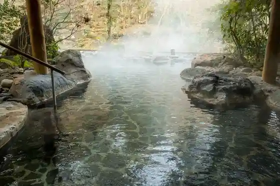
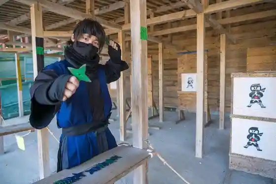
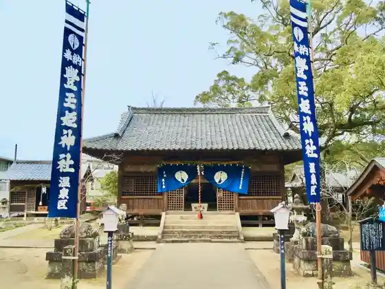
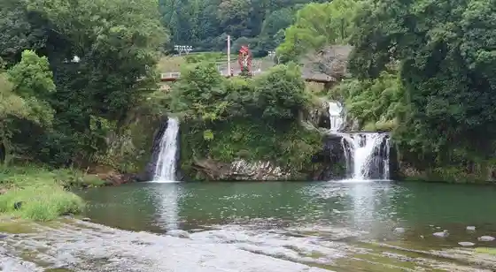

Ureshino Onsen
Ureshino, Saga · 0954-43-0137 · Official / source link

Saga Ganso Ninja Village Hizen Yume Kaido
Ureshino, Saga · 0954-43-1990 · Official / source link

Toyotamahime Shrine
Ureshino, Saga · 0954-43-0680 · Official / source link

Todoroki Falls Todoroki no Taki Park
Ureshino, Saga · 0954-27-7020 · Official / source link

Ureshi no O Cha Cha Village
Ureshino, Saga · 0954-43-1188 · Official / source link
Roadside Station (Ureshi no Maruku) Kanko Koryu Shisetsu Maruku Aizu
Ureshino, Saga · 0954-27-8709 · Official / source link
Ureshino Onsen Koshu Bath Shiiboruto Baths
Ureshino, Saga · 0954-43-1426 · Official / source link
Shioda Tsu
Ureshino, Saga · 0954-66-3550 · Official / source link
Ureshino Onsen Tourism Association
Ureshino, Saga · 0954-43-0137 · Official / source link
Ureshi no Cha Koryu Kan Chaoshiru
Ureshino, Saga · 0954-43-1991 · Official / source link
Ureshino Koryu Center
Ureshino, Saga · 0954-43-1860 · Official / source link
224shop+saryo
Ureshino, Saga · 0954-43-1220 · Official / source link
Izumi Shikibu Park
Ureshino, Saga · 0954-27-7020 · Official / source link
Yuyado Plaza
Ureshino, Saga · 0954-42-3310 · Official / source link
Tateiwa Lookout
Ureshino, Saga · Official / source link
Yu Yu Plaza Shiiboruto no Ashi Yu
Ureshino, Saga · 0954-42-3310 · Official / source link
Hirokawa Hara Lakeside no Mori Campground
Ureshino, Saga · Official / source link
Experience : Teiitsurizumu
Ureshino, Saga · Official / source link
Hizen Yoshida Yaki Kamamoto Hall
Ureshino, Saga · 0954-43-9411 · Official / source link
Shida Yaki no Sato Museum
Ureshino, Saga · 0954-66-4640 · Official / source link
Ureshino Autodoafiirudo
Ureshino, Saga · 0954-43-0137 · Official / source link
Yu Ttsura Plaza
Ureshino, Saga · 0954-42-3310 · Official / source link
Shida Yaki Museum / Yakimo no Wa Zakka Shida no Kura
Ureshino, Saga · 0954-66-2202 · Official / source link
Ide Shuzo Yugengaisha
Ureshino, Saga · 0954-43-0001 · Official / source link
Nakayama Seika Ho
Ureshino, Saga · Official / source link
Shimomurasaikuruzu
Ureshino, Saga · 0954-27-7773 · Official / source link
Nishioka Ie House
Ureshino, Saga · Official / source link
Shioda Tsu Streetscape Koryushukai Tokoro
Ureshino, Saga · 0954-66-3550 · Official / source link
Bunko Stay haruhi
Ureshino, Saga · 080-4119-3025 · Official / source link
Saga Ureshino Bariafurii Tour Center
Ureshino, Saga · 0954-42-5126 · Official / source link
Sugi Hikari Toki Mise
Ureshino, Saga · Official / source link
Hon O Tera
Ureshino, Saga · Official / source link
Ureshino Yakusho
Ureshino, Saga · 0954-66-3111 · Official / source link